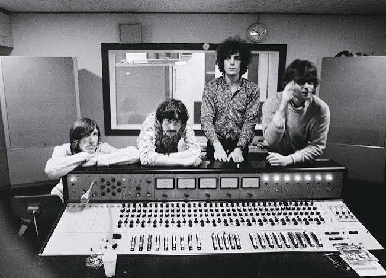
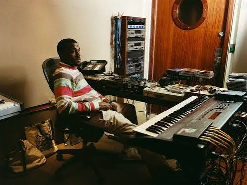
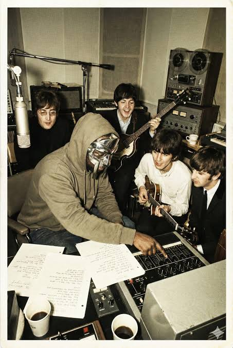
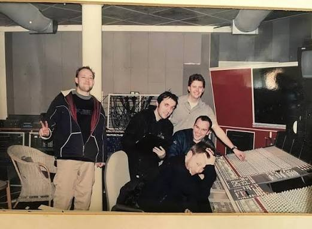

Pink Floyd

Pink Floyd is a British progressive rock band. Their music often uses long instrumental sections, sound effects, and synthesizers. A lot of their albums explore ideas like time, isolation, and society.
Good album to start with: Wish You Were Here (1975).
Kanye West

Kanye West became well known for using soul samples and unusual production in hip-hop. His music has changed a lot throughout his career, from the soulful sound of his early albums to the electronic and industrial sounds of Yeezus.
Good album to start with: The College Dropout (2004).
MF DOOM

MF DOOM was an underground rapper who performed while wearing a metal mask. His lyrics have lots of internal rhymes, jokes, and references. His beats often use short samples that give the music an old-school sound.
Good album to start with: MM..FOOD (2004).
Radiohead

Radiohead started with alternative rock and later experimented with electronic music and different song structures. Their music can sound emotional, strange, or uneasy, especially on albums like Kid A.
Good album to start with: OK Computer (1997).
Tyler, The Creator
Tyler, The Creator is a rapper and producer who has developed from an abrasive early style into music that mixes hip-hop with soul, jazz, and pop. His albums often have their own visual style and tell a story through the songs.
Good album to start with: IGOR (2019).
Visit the albums page for more information about these records.